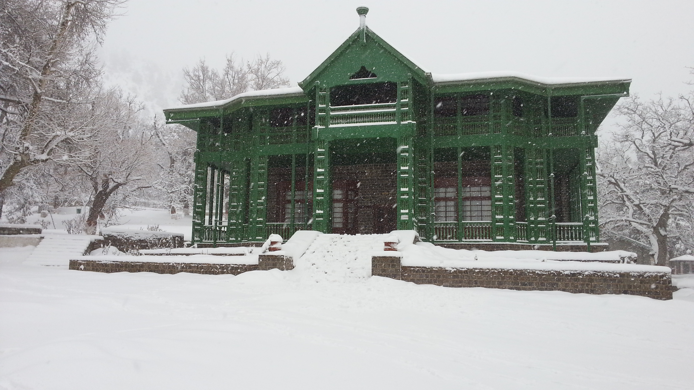

<div class="portfolio-single-load clearfix">
    <div class="custom-full-width-box">
        <div class="custom-container">
            <div class="custom-row align-items-center">
                <div class="custom-image-column">
                    
                </div>
                <div class="custom-text-column">
                    <h2 class="custom-heading">Ziarat</h2>
                    <p class="custom-paragraph">
                        
                        Ziarat, a picturesque resort town nestled in the Ziarat District, is renowned for its scenic beauty and cultural significance. Home to the majestic Quaid-e-Azam Residency, the town serves as a poignant reminder of Pakistan's founding father, Muhammad Ali Jinnah. Visitors can explore the colonial-era architecture, stroll through the verdant juniper forests, and pay homage at the iconic Shrine of Baba Kharwari. Experience the timeless charm and tranquility of Ziarat as you unwind amidst the breathtaking landscapes of this idyllic retreat.


                    </p>
                </div>
            </div>
        </div>
    </div><!-- .custom-full-width-box end -->

</div><!-- end single-project -->
